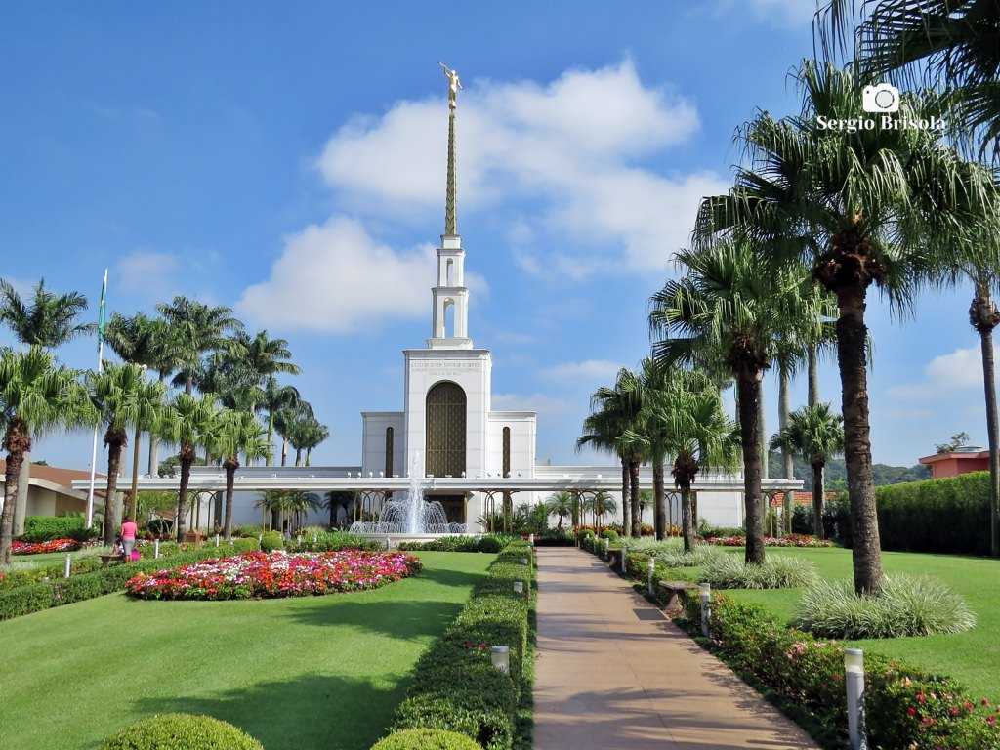
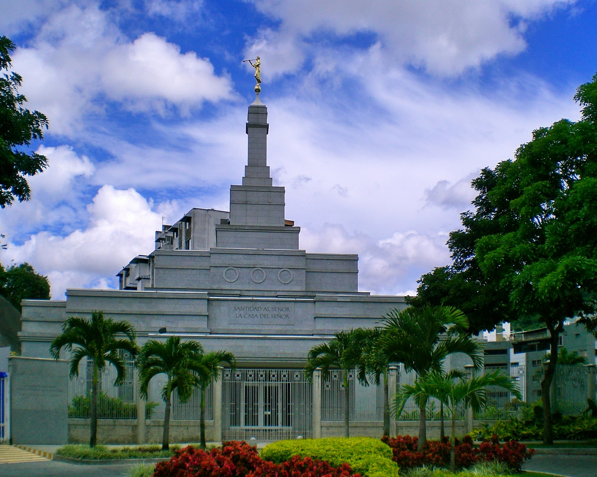

Álbum do Templo
≡
Página Inicial
Antigo
Novo
Grande
Pequeno
Templos

Templo de São Paulo
Templo do Rio de Janeiro
Templo de Brasília
Templo de Berna, Suíça
Templo de Fortaleza

Templo de Caracas, Venezuela
Templo de Toronto, Canadá
Templo de Puebla, México
Templo da Seoul, Coreia do Sul